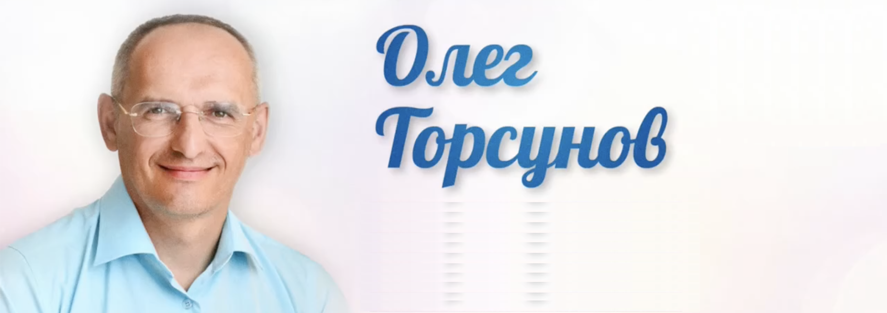

Олег Торсунов родился 2 марта 1965 года в уральском городе Серове в семье рабочих. После школы поступил в медучилище, которое успешно окончил. Далее учился в Самарском медицинском институте, откуда после второго курса был призван в армию. Проходил службу в должности санинструктора. В 1992 году окончил мединститут и затем на несколько лет отправился в Индию, где изучал древнюю культуру и медицину.

Олег Геннадьевич Торсунов
- Кандидат медицинских наук.
- Популяризатор здорового образа жизни.
- Автор уникальных оздоровительных методик.
- Известный во многих странах писатель и лектор.
Знания, идеи, методы
Знания, которые дает Олег Торсунов, выходят за рамки общепринятых представлений. Он рассказывает об энергетическом строении человека и связи характера с болезнями, об астрологическом влиянии планет на здоровье и судьбу, о карме и реинкарнации, о построении гармоничных отношений, воспитании счастливых детей и многом другом.
Будучи популяризатором здорового образа жизни, он уделяет большое внимание вопросам правильного питания и режима дня, имеет собственные разработки в этой области. Сформулировал метод позитивной мотивации на высшие гуманитарные ценности, на основе которого в 2012 году защитил кандидатскую диссертацию. Автор уникальных методик диагностики и лечения заболеваний с помощью природных материалов — минералов и растений.
Олег Торсунов является признанным специалистом в сфере семейной психологии и практик личностного роста. Более тридцати лет изучает наследие Востока в вопросах медицины, физического и духовного развития человека, общественных и личных отношений, адаптируя этот опыт к современным условиям и в доступной форме излагая его в книгах и лекциях.
Деятельность, проекты, достижения
Издал серию книг «Добрые советы доктора Торсунова» о доступных и эффективных методах лечения гриппа, ОРЗ, ангины, бронхита, гипертонии, гепатитов и других распространенных заболеваний. Большую популярность получила серия «Законы счастливой жизни», посвященная фундаментальным принципам гармоничного существования, изложенным в древних писаниях.
Олег Торсунов читает лекции в странах СНГ, Европе и США, выступает на радио и телевидении. Часть лекций и книг уже переведена на английский и другие иностранные языки. Благодаря Олегу Геннадьевичу, в 2006 году все русскоязычное население мира получило возможность без дополнительных затрат и с максимальным удобством знакомиться с лекциями на интернет-волнах «Веда-радио».
Основал просветительский центр «Сарасвати», целью которого является обучение людей принципам здоровой и гармоничной жизни, самоосознанию и самосовершенствованию. Помимо него в проекте принимают участие такие известные эксперты, как Вячеслав Рузов, Олег Сунцов, Владимир Слепцов, а также молодые талантливые специалисты, прошедшие глубокое обучение, — Антон Кобзев, Евгений Койнов, Артем Леонов и др.
Олег Геннадьевич поспособствовал созданию во многих российских и зарубежных городах клубов «Благость», где его слушатели и читатели могут поделиться опытом применения полученных знаний, помогать и поддерживать друг друга на пути самосовершенствования.
Чтобы совершенствовать свои методики и возвращать людям здоровье, в 2004 году доктор Торсунов создал оздоровительный центр «Амрита», который сначала находился в Москве, а с 2010 года успешно работает под Краснодаром. Также с 2013 года в центре действует профилактический отдел «Камень здоровья», занимающийся дистанционным подбором минералов, улучшающих общее психофизическое состояние.
Научные разработки
При поддержке коллег доктор Торсунов продолжает научные изыскания. В 2015 году в рамках участия в VII Международной конференции «Современные аспекты реабилитации в медицине» была опубликована статья «Коррекция вегетативных нарушений в условиях метеоклиматической дезадаптации традиционными и альтернативными методами восстановительной терапии». Она описывает, как применение минералов по методике Олега Торсунова способствует процессу акклиматизации в сравнении с традиционным иглоукалыванием.
На Всероссийской научно-практической конференции с международным участием «Реабилитация и профилактика — 2015» был сделан доклад по теме «Эффективность коррекции вегетативных нарушений в условиях метеоклиматической дезадаптации методами рефлексотерапии и кристаллотерапии», рассказывающий о результатах применения методик доктора Торсунова.
Признание
В 2011 году Международная Академия Трезвости присвоила Олегу Геннадьевичу ученое звание профессора за заслуги в отрезвлении нации. В 2014 году он получил благодарственное письмо от комитета Государственной Думы по делам общественных объединений и религиозных организаций за подвижническую деятельность в духовном, нравственном и физическом оздоровлении страны. В 2015 году награжден золотой медалью РАЕН имени Мечникова за вклад в укрепление здоровья нации.
Но главное — это признание и благодарность сотен тысяч людей по всему миру, которые посещают лекции, изучают аудио- и видеозаписи, читают книги, следят за деятельность доктора Торсунова в социальных сетях, а также участвуют в его многочисленных проектах и глубоко реализуются как личности, становясь частью возрождения духовно-нравственной культуры в обществе.